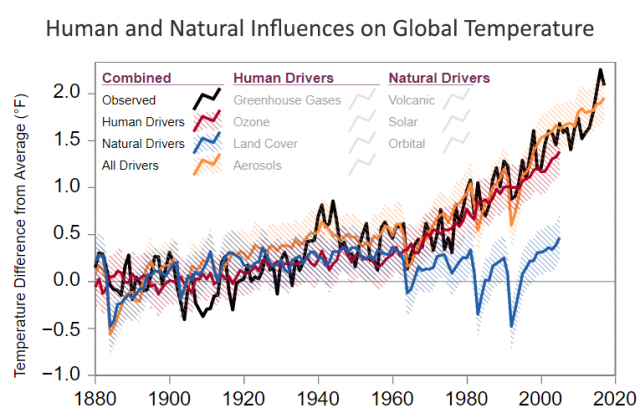

1. Various Human Activities
Burning coal, oil and gas produces carbon dioxide and nitrous oxide. Cutting down forests (deforestation). Trees help to regulate the climate by absorbing CO2 from the atmosphere. When they are cut down, that beneficial effect is lost and the carbon stored in the trees is released into the atmosphere, adding to the greenhouse effect. Increasing livestock farming. Cows and sheep produce large amounts of methane when they digest their food. Fertilisers containing nitrogen produce nitrous oxide emissions. Fluorinated gases are emitted from equipment and products that use these gases. Such emissions have a very strong warming effect, up to 23 000 times greater than CO2.

2. Greenhouse Gasses
Another main driver of climate change is the greenhouse effect. Some gases in the Earth's atmosphere act a bit like the glass in a greenhouse, trapping the sun's heat and stopping it from leaking back into space and causing global warming. Many of these greenhouse gases occur naturally, but human activities are increasing the concentrations of some of them in the atmosphere, in particular:
carbon dioxide (CO2), methane, nitrous oxide, fluorinated gases
3. Natural Causes
Some amount of climate change can be attributed to natural phenomena. Over the course of Earth’s existence, volcanic eruptions, fluctuations in solar radiation, tectonic shifts, and even small changes in our orbit have all had observable effects on planetary warming and cooling patterns.